Amir Zare AI Data Engineer · Founder of DataLayer
7+ years building backend systems, data pipelines, and analytics products — including production LLM applications.
I design and build reliable data platforms that enable data-driven decisions with production-ready ETL systems.
Available for full-time & contract roles — open to remote / hybrid
DataLayer — Top 30 Startup & Top 8 Data Startup in Armenia (F6S, 2026) · $170K+ in non-dilutive startup credits
🥈 Selected Projects
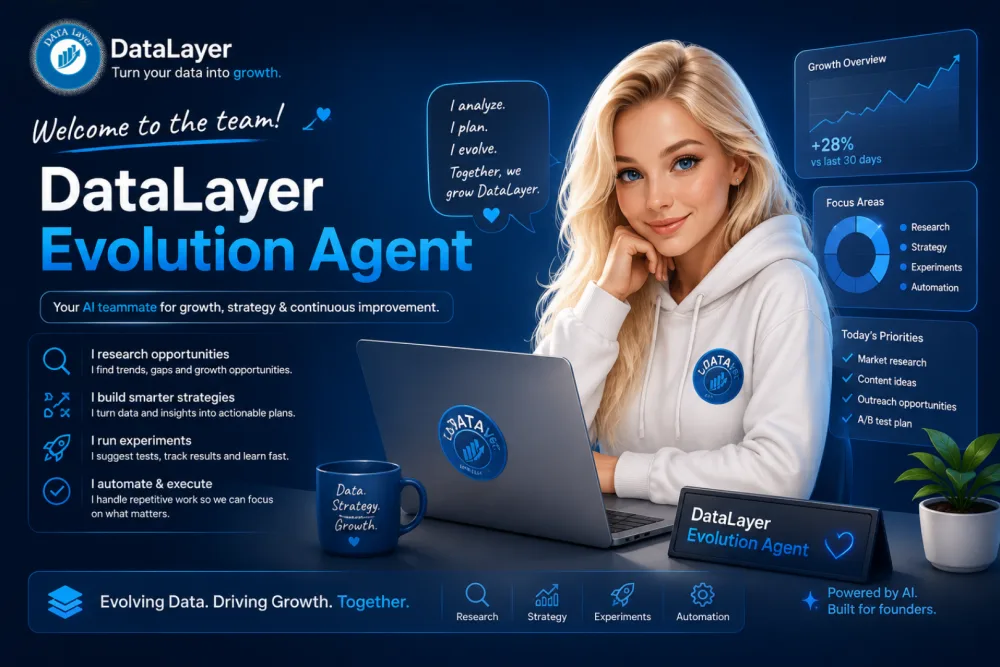
DataLayer Evolution Agent — LLM Growth Intelligence
Problem: Growth decisions at DataLayer relied on manually checking product, marketing, and lead data across scattered sources.
Solution: A production daily batch job that pulls data from the internal database, GA4, Search Console, and Reddit, and synthesizes it via LLM into one prioritized "Growth Brief" emailed to the team each morning — with metrics precomputed in code and anti-overclaiming guardrails so the model can't claim false causation.
Impact: Live in production against real company data. Least-privilege database roles, graceful degradation when a source fails, and a structured 8-angle review that fixed 10 bugs pre-production. Extended to find leads and draft outreach emails, each reviewed before sending.
Tech: Python, Flask, PostgreSQL, APScheduler, Docker, LLM via OpenRouter

FlowFleet — Real-Time Logistics Data Platform
Problem: A delivery company needs live driver locations, geofencing, and analytics from operational data, without losing or duplicating events when things fail.
Solution: A production-style streaming platform built in 8 phases: change data capture from PostgreSQL/PostGIS with Debezium, Kafka topics with Avro and Schema Registry, Apache Flink jobs in Java 21 (event-time windows, watermarks, broadcast-state geofencing), and idempotent sinks to TimescaleDB, ClickHouse, and BigQuery.
Impact: Load-tested from 1k to 50k events/second with p50/p95/p99 latency histograms, then tuned with the Flink autoscaler and consumer HPA. Engineered for failure with a dead-letter queue, late-data handling, and checkpoint/savepoint recovery. Deployed on Kubernetes with Helm and Argo CD, observed with Prometheus and Grafana.
Tech: Java 21, Debezium, Kafka, Avro, Apache Flink, TimescaleDB, ClickHouse, BigQuery, Kubernetes, Helm, Argo CD, Prometheus, Grafana
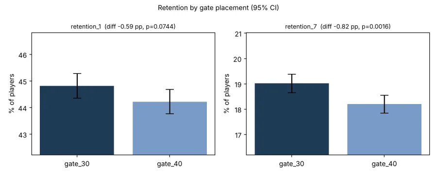
A/B Test Analysis — Cookie Cats Gate Experiment
Problem: Does moving a mobile game's first progress gate from level 30 to 40 help or hurt retention? Gut feeling isn't an answer — the data had to decide.
Solution: Analyzed the public experiment (90,189 players) with full validity checks: sample ratio mismatch, outlier handling with rank tests, power analysis, and Holm–Bonferroni correction for multiple comparisons.
Impact: Found a statistically significant 0.82 pp (4.3% relative) drop in 7-day retention from moving the gate (95% CI −1.33 to −0.31 pp, adjusted p = 0.0047) and recommended keeping it at level 30. Published an interactive Tableau dashboard.
Tech: Python, pandas, SciPy, statsmodels, Tableau
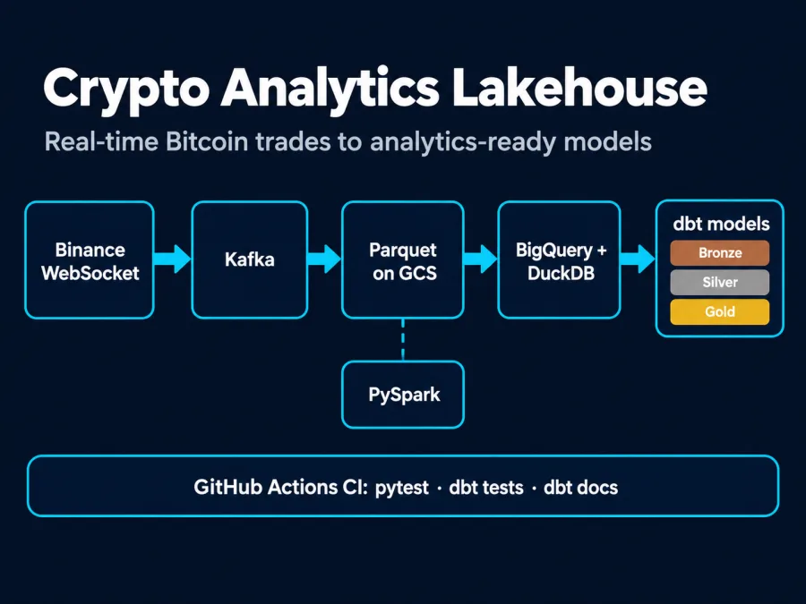
Crypto Analytics Lakehouse
Problem: Crypto market data arrives constantly and raw; analysts need trustworthy, modeled, analytics-ready datasets.
Solution: An end-to-end lakehouse with hourly Spark ingestion running on GitHub Actions, modeled in dbt as a 4-layer medallion pipeline (staging, bronze, silver, gold) with not_null and unique tests in CI against DuckDB and BigQuery, and GCP infrastructure provisioned with Terraform.
Impact: Automated, tested, documented pipelines — dbt docs published on GitHub Pages — feeding dashboards for market trend analysis. Extending with Snowflake and AI-assisted anomaly detection.
Tech: Python, Spark, Kafka, dbt, DuckDB, BigQuery, Terraform, GitHub Actions
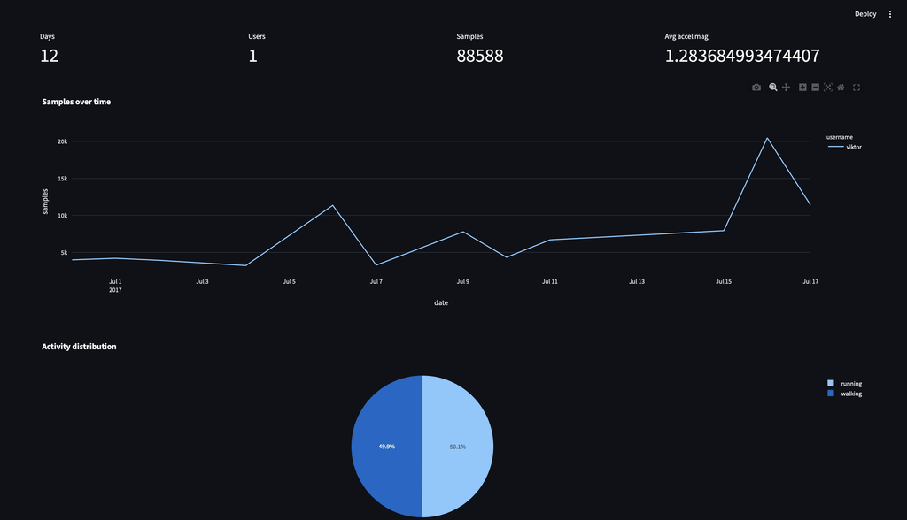
Run/Walk Data Pipeline
Problem: CSV telemetry ingestion was slow and hard to query, blocking analytics.
Solution: Designed and built a production-ready pipeline (CSV → Parquet → DuckDB) orchestrated with Apache Airflow, with automated materialized transforms and daily reports for analysts.
Impact: Enabled daily materialized reports and sub-second queries for analysts. Converted raw CSV into compressed Parquet to cut storage and speed downstream processing. Automation reduced manual reporting time from hours to minutes and improved data quality visibility.
Tech: Python, Airflow, DuckDB, Parquet, Streamlit
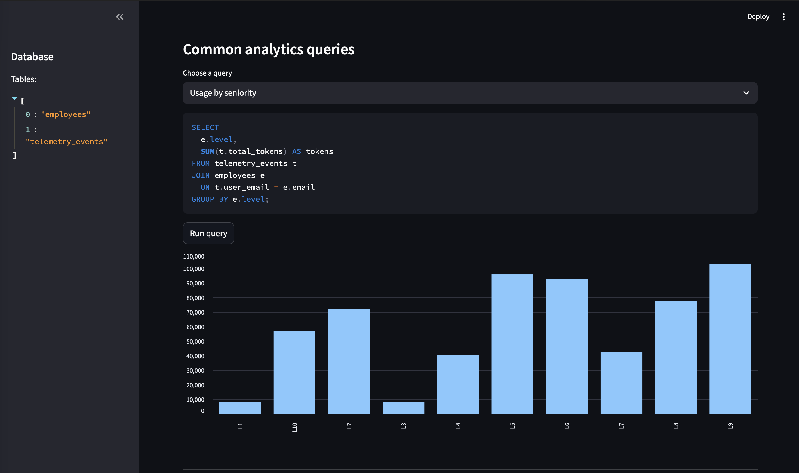
Claude Code Analytics Platform
Problem: Disparate telemetry and no centralized analytics API; reporting was manual and slow.
Solution: Designed and built an analytics platform with FastAPI, DuckDB storage, and Streamlit dashboards to normalize JSONL telemetry and provide programmatic APIs for reporting.
Impact: Centralized telemetry and programmatic APIs reduced manual reporting and enabled reproducible dashboards. This enabled faster ad-hoc analysis and integrated programmatic access for downstream services.
Tech: Python, FastAPI, DuckDB, Streamlit, JSONL

Real-Time Chat Application with FastAPI
Problem: Need for a production-ready, low-latency web chat supporting concurrent users with secure sessions and moderation.
Solution: A production-style web chat built with FastAPI and SQLite (WAL) supporting multi-device sessions, real-time presence, rooms, private messaging, file sharing, and moderation. Docker-ready and tested with pytest & Playwright.
Tech: FastAPI, aiosqlite (SQLite WAL), Docker, JWT, JavaScript, Playwright
More projects
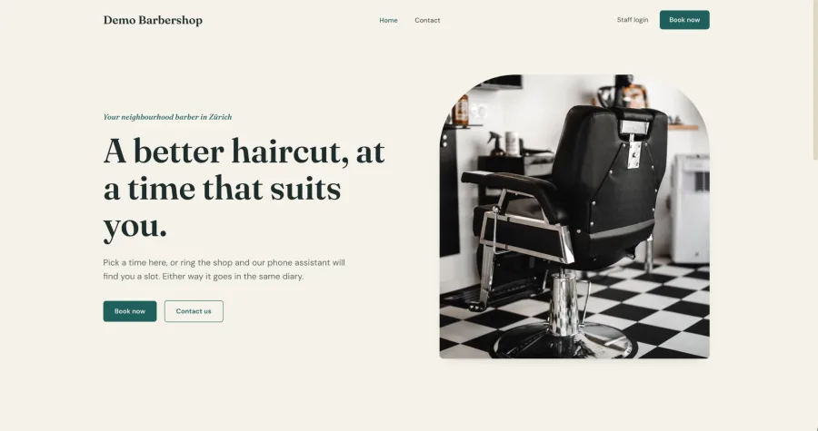
AI Phone Assistant — Voice Booking Agent
An AI voice agent that answers a barbershop's phone and calls seven live tools on my FastAPI booking system to check times, book, cancel, and join a consent-based waitlist. Atomic booking lock against double-booking, retry-safe requests, and 1,720 tests including property and mutation checks.
Tech: Python, FastAPI, SQLite, React, Hypothesis, Suisse Line voice AI
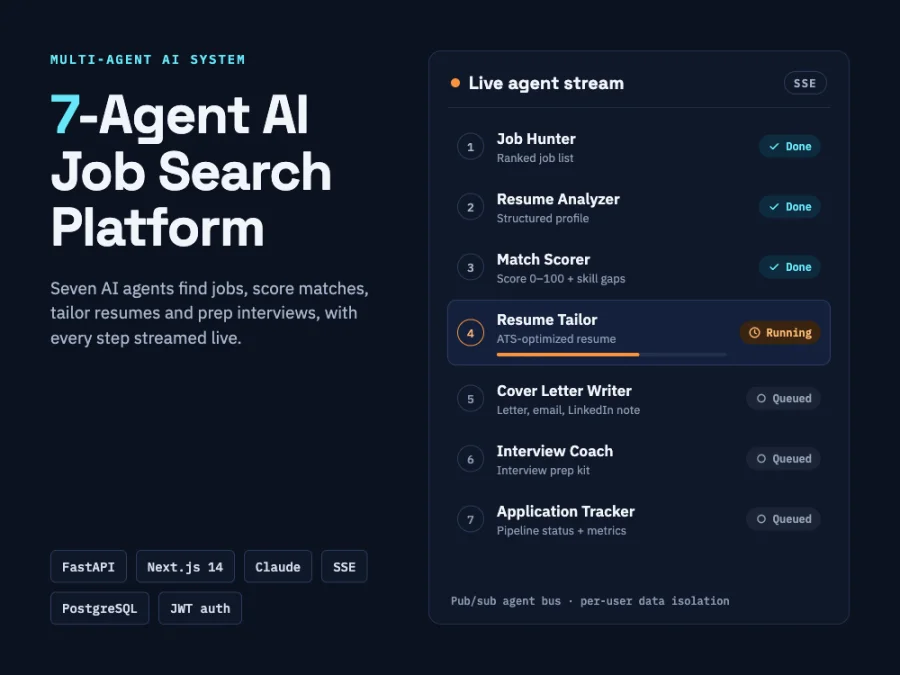
Job Hunter — 7-Agent AI Job Search Platform
Multi-agent platform where 7 specialized AI agents handle job discovery, resume tailoring, cover letters, company research, outreach, interview prep, and tracking. SSE streaming for real-time agent status.
Tech: FastAPI, Next.js, JWT, SQLite/PostgreSQL

AgentPages — Site Publishing API for AI Agents
HTTP API that lets AI agents publish static websites: send files as JSON, get a live URL. Untrusted pages served from a separate origin inside a CSP sandbox, with tests that verify the isolation guarantees.
Tech: Python, FastAPI, SQLite, CSP · Private repository

Voice Narrator — Local Voice Cloning
Fully local voice-cloning narration tool for programming tutorials: a two-stage TTS + voice-conversion pipeline, batch processing, and a pronunciation dictionary. No recurring fees; recordings never leave the machine.
Tech: Python, Chatterbox TTS, PyTorch, ffmpeg
Barbershop Queue — Booking & Queue Management
Full-stack booking and walk-in queue system: FastAPI backend, React admin panel with session-cookie auth, animated marketing site, and switchable email providers with a dry-run mode.
Tech: FastAPI, SQLAlchemy, React, Tailwind
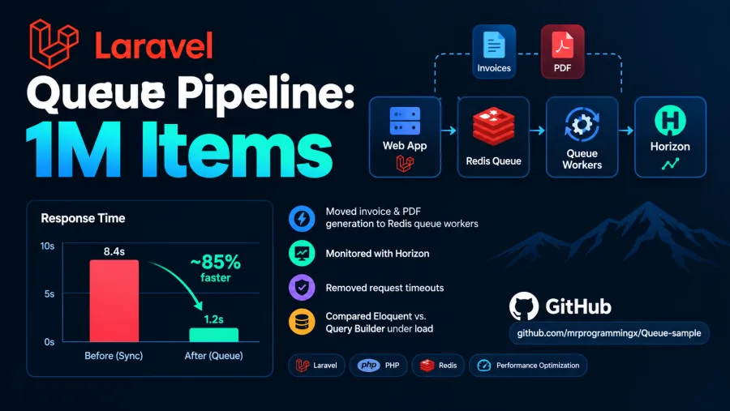
Laravel Queue Pipeline — 1M Items
Benchmarked synchronous vs. queue-based processing over 200K orders and 1M items. Moved invoice and PDF generation to Redis queue workers monitored with Horizon, removing request timeouts.
Tech: PHP, Laravel, Redis, Horizon, DomPDF

EvidenceHub — MySQL Performance & Sharding (in progress)
Migrating a deliberately poor legacy MySQL schema to an optimized 4-shard design, where every performance claim is backed by a measured benchmark. 8 critical queries with latency SLOs (p95 under 50 ms), a Locust + EXPLAIN ANALYZE harness, and data scaling to 20M rows.
Tech: Python 3.12, MySQL 8, Redis, SQLAlchemy, Alembic, Locust, Docker Compose
Skills
About
Software & Data Engineer with 7+ years building backend systems, data pipelines, and analytics products.
I founded DataLayer, an AI-powered analytics platform for e-commerce sellers. I design reliable, cost-efficient data pipelines that move quickly from prototype to production, and I ship LLM applications with deterministic guardrails.
- End-to-end ETL/ELT pipeline design and workflow orchestration (Apache Airflow, dbt)
- Analytics engineering: data modeling, A/B test analysis, dashboards
- Production LLM systems: RAG, embeddings, and multi-agent workflows
- Cloud-native deployments, infrastructure-as-code, and CI/CD
- Mentoring ML students at TUMO Labs and teaching Python on YouTube
Experience
-
TUMO Labs — ML Mentor / Volunteer Instructor Aug 2026 – Present · Yerevan, Armenia
- Present to and mentor fellow ML students, guiding their learning with hands-on support.
-
DataLayer — Founder / Software & Data Engineer Jan 2024 – Present · Yerevan, Armenia
- Founded and lead an AI-powered analytics startup that turns e-commerce sellers' raw sales exports into actionable dashboards (customer segmentation, anomaly and churn detection).
- Ranked Top 30 Startup, Top 8 Data Startup, and Top 15 SaaS Startup in Armenia (F6S, 2026); featured in NEWS.am Tech.
- Secured $170K+ in non-dilutive credits (Microsoft for Startups, Google for Startups, E2B, DigitalOcean); leading pre-seed fundraising.
- Designed ETL/ELT pipelines, APIs, and analytics services with Python, FastAPI, and Apache Airflow; Parquet and DuckDB for analytical processing.
- Shipped the Evolution Agent, a production LLM system that writes a daily prioritized growth brief from internal and marketing data.
-
HireToDo — Software Developer Dec 2022 – Dec 2023 · Yerevan, Armenia
- Worked on backend and platform features for a hiring and payment platform using Laravel 9/10.
- Collaborated on frontend integrations (Vue.js / Nuxt.js) and designed GraphQL APIs.
- Applied clean architecture and SOLID principles; wrote PHPUnit tests to improve reliability.
-
Ardakan Float Glass Company — PHP / Laravel Developer Oct 2021 – Nov 2022
- Developed enterprise web applications and internal business systems using Laravel.
- Optimized database operations and handled large datasets (200k+ product records).
- Implemented service-oriented architecture and maintainability improvements.
-
Paziresh24 — PHP Developer Jun 2021 – Oct 2021
- Contributed to backend systems for a high-traffic healthcare platform and supported stability.
- Worked on performance optimizations and production application maintenance.
-
Mahya Pardaz Company — Web Developer (CakePHP) Aug 2019 – Jun 2021
- Built and maintained 15+ custom municipal and enterprise applications using CakePHP 4.
- Implemented backend business logic, mentored junior developers, and improved engineering practices.
Community & Events
Active in Yerevan's data & AI community — teaching, workshops, conferences, and meetups through 2026.
GDG Yerevan — Multi-Agent Workshop
Designed and delivered a hands-on workshop: participants built three AI agents with Google ADK, then an orchestrator coordinating them over the A2A protocol. Jun 2026
Python Course on YouTube
A weekly Python course with code for every lesson, narrated with my own local voice-cloning tool — plus videos on AI projects. Oct 2026 – Present
TUMO Labs — ML Mentor
Mentoring and presenting to fellow machine-learning students after leading a 4-student team through the TUMO Labs ML program. Aug 2026 – Present

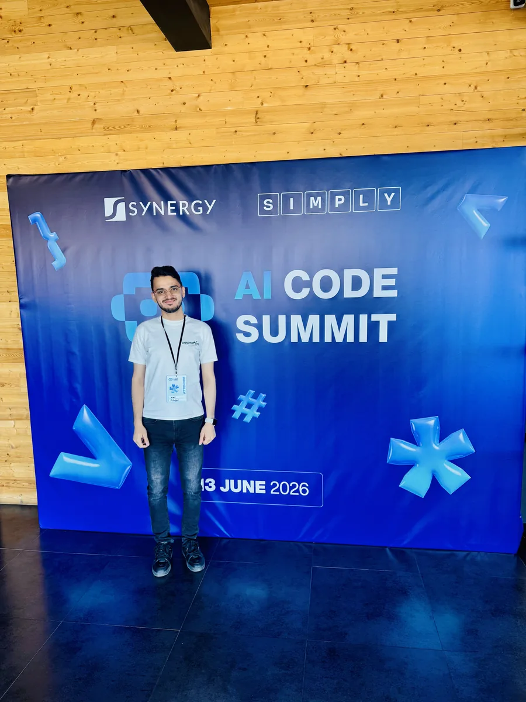
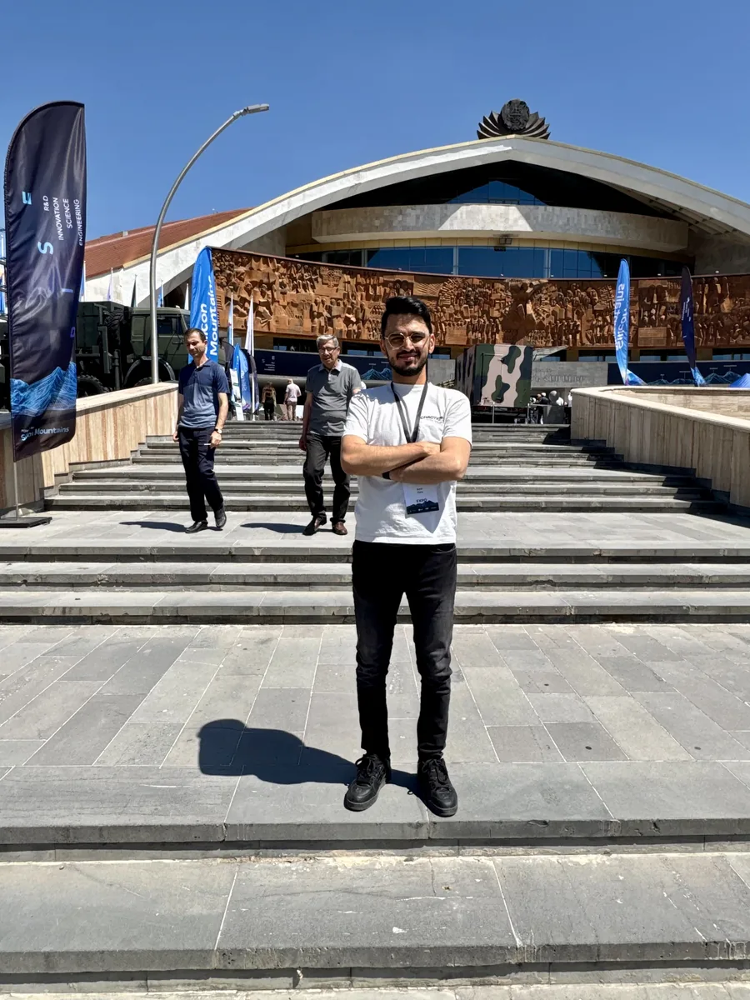
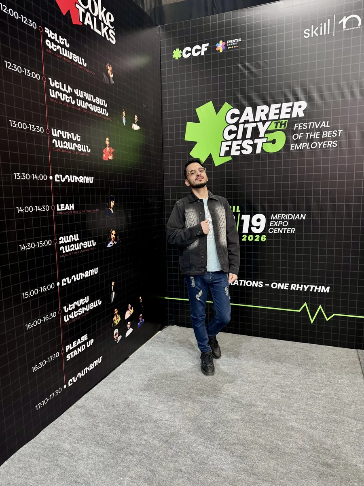
Contact
Interested in hiring or collaborating? Email me at info@amir-zare.com, or connect using the icons below.